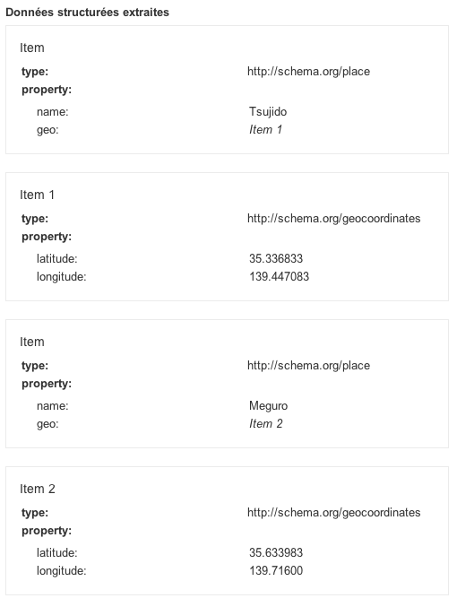
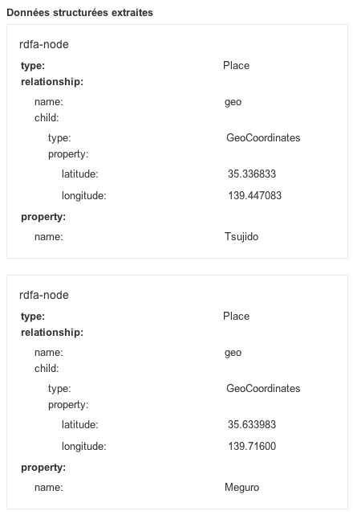

Adding Geolocation metadata, with microformats, datasets, microdata and RDFa Lite
Introduction
In September 2011, I needed to mark up location data in an HTML document and it became more complicated than I initially thought it would be. I started to think about this topic again recently and explored some possibilities. In this article I will share my findings, looking at how I used microformats, datasets, microdata and RDFa Lite to mark up this data, and discussing what the best option might be.
Microformats
Quite a few years back, there were not that many choices for adding explicit metadata to the content of a web page. It was possible to add metadata to the web page itself through the <meta> element, which was useful in some cases, but not for cases like mine where more precise granularity was required. Microformats tried to answer some basic use cases for simple vocabularies, without addressing the semantic clash of micro-communities.
The microformat syntax for geolocation information is quite verbose:
<span class="geo">
<span class="latitude">
<span class="value-title"
title="35.336833"> </span>
</span>
<span class="longitude">
<span class="value-title"
title="139.447083"> </span>
</span>
Tsujido
</span>It also requires a specific microformat JavaScript library for parsing the data. There are clues for parsing such data but no dedicated (official) JavaScript library to process it. There is a proposal for a <data> element, which might be useful for the microformats community in the future, but that would still need a dedicated API for extracting the data.
Datasets API
Next, I explored the option that seemed most natural to me — using the Datasets API.
<ul>
<li class="location"
data-lat="35.336833"
data-lon="139.447083">Tsujido</li>
<li class="location"
data-lat="35.633983"
data-lon="139.71600">Meguro</li>
</ul>I could do something along these lines to parse the data:
var lonlist = document.querySelectorAll('[data-lon]');
function getPoslon(city) {
var lon = city.dataset.lon;
return lon;
};
for (var i = lonlist.length - 1; i >= 0; i--) {
console.log(getPoslon(lonlist[i]));
};which displays the thing I wanted in the console:
139.71600
139.447083But that didn't feel quite right either. data-* should not be used for encoding useful information for the public. The datasets specification says:
Custom data attributes are intended to store custom data private to the page or application, for which there are no more appropriate attributes or elements.
Location data seems interesting to the rest of the world, therefore it shouldn't be stored under data-* attributes. This creates an additional question: how do we use data-*? My personal opinion is that the use cases are very narrow and maybe data-* should have been named something like local-*. I can see how it could be used for parameters for a UI, for example.
So what are the other choices?
Microdata API
The Microdata API has been designed to expose more structured data in a web page so that people and inference engines can use it. There is a vocabulary for geographical coordinates defined at schema.org. Let's see how we'd use it for my data:
<ul>
<li itemscope itemtype="http://schema.org/Place">
<span itemprop="name">Tsujido</span>
<div itemprop="geo"
itemscope
itemtype="http://schema.org/GeoCoordinates">
<meta itemprop="latitude" content="35.336833"/>
<meta itemprop="longitude" content="139.447083"/>
</div>
</li>
<li itemscope itemtype="http://schema.org/Place">
<span itemprop="name">Meguro</span>
<div itemprop="geo"
itemscope
itemtype="http://schema.org/GeoCoordinates">
<meta itemprop="latitude" content="35.633983"/>
<meta itemprop="longitude" content="139.71600"/>
</div>
</li>
</ul>The rich snippet data testing tool and the Live Microdata tool can both help to check that the data structure is valid. In each case, two locations are detected, and for each of them it gets the name, latitude and longitude. Try them out for yourselves, and see Figure 1 for the result I got.

Figure 1: Validation of microdata markup.
The HTML markup became quite verbose and the JavaScript is a little bit unfriendly.
var places = document.getItems('http://schema.org/Place');
for (var i = places.length - 1; i >= 0; i--) {
longitude = places[i].properties['geo'][0].properties['longitude'][0].itemValue;
console.log(longitude);
};places returns a NodeList. On each node I am searching for the geo property, itemprop="geo", which contains latitude and longitude data (for example itemprop="longitude") and extracting that data with itemValue.
Once again, I get:
139.71600
139.447083The chaining of objects in this API is cumbersome, and not very user friendly — I would prefer something that directly plays with the meaning described in the document. In pseudo-code, I would prefer something along these lines
foreach places in the document:
longitude = places[i].longitudeto return a list of data, or one value if there were only one value.
RDFa Lite
Finally, let's try the RDFa Lite version of the markup. If you are starting from Microdata markup, the conversion is easy and makes the markup more readable. The steps are as follows:
itemscopeis removed.itempropis replaced byproperty.itemtypeis replaced bytypeof, which holds a value such asPlaceorGeoCoordinates.vocab="http://schema.org/"is added on an enclosing tag.
The markup becomes simply:
<ul vocab="http://schema.org/">
<li typeof="Place">
<span property="name">Tsujido</span>
<div property="geo"
typeof="GeoCoordinates">
<meta property="latitude" content="35.336833"/>
<meta property="longitude" content="139.447083"/>
</div>
</li>
<li typeof="Place">
<span property="name">Meguro</span>
<div property="geo"
typeof="GeoCoordinates">
<meta property="latitude" content="35.633983"/>
<meta property="longitude" content="139.71600"/>
</div>
</li>
</ul>Once this is tested with the rich snippet data testing tool we get the result seen in Figure 2.

Figure 2: Validation of RDFa Lite markup.
The issue here is that there is no API in browsers to access the data. I asked around on various mailing lists to see if someone could come up with a shim to parse RDFa Lite data, but have had no positive responses as yet.
Some Final Thoughts
Most of the issues of explicit metadata in Web pages are well-known. Cory Doctorow called it metacrap in his essay, Metacrap: Putting the torch to seven straw-men of the meta-utopia . While I do not agree with all his conclusions, he clearly puts across some of the issues associated with metadata editing.
One of the main issues is the feedback loop. As long as the tools are not helping people who are editing the metadata to get direct feedback on the editing, there will be less chance of it being properly edited in the Web page. Short feedback loops are essential to the quality of data. Having good solid APIs to access the data and expose them is a way to ensure the quality of metadata.
The second issue is that the data has to be directly useful for the person who is editing it. The only reason we bother to enter information in an address book is because we know it is directly useful to us.
As a conclusion, I would love to have a shim for accessing RDFa Lite data on top of Microdata API or — even better — to have an RDFa Lite API implemented in browsers. I found the RDFa Lite markup more readable than the Microdata markup (in this simple case at least). The Microdata API is a bit heavy to write/read. The Dataset API is a lot easier to write/read for accessing data, but not for public consumption.
| Markup | Verbosity | Native Browser API | Online Checkers |
|---|---|---|---|
| microformats | compact | no | ? |
| datasets | compact | yes | N/A |
| microdata | very verbose | yes | yes |
| RDFa Lite | verbose | no | yes |
karlcow

Karl is working from Montréal, Canada. It has been participating to the Web since its inception under different roles including Web designer, CTO, W3C staff, translations volunteer, bits pusher, http poet, …
This article is licensed under a Creative Commons Attribution 3.0 Unported license.
Comments
-

Use cases for data-* are numerous. Very useful for private metadata. No public semantic.
-

Indeed.
-

Thumbs up for first 2013 article on dev.opera :) I hope many more will follow!
-

WRT microformats, check out microformats 2 h-geo (http://microformats.org/wiki/microformats-2#h-geo), Ben Ward’s hparse-js (https://github.com/BenWard/hparse-js) for parsing and my own php-mf2 (http://waterpigs.co.uk/php-mf2) online syntax checker :)
-

Have to agree with Cory on this: most of the effort in this direction is a significant waste of time and resources. The only one that had any legs, time, was unceremoniously dropped.
-
I haven’t tried this yet, but did you take a look at “green-turtle”?
-
browsers may not offer an api named microformats api, but the apis for html classes is the microformats api. granted this has its limitations, but the point is that it exists.
No new comments accepted.dahulevogyre
Wednesday, January 16, 2013
dahulevogyre
Wednesday, January 16, 2013
What is surprising with this article is that you describe the ways (marking up data), but not the purpose.
What is your use case exactly ?
Martin Kadlec
Wednesday, January 16, 2013
barnabywalters
Wednesday, January 16, 2013
(Originally posted http://waterpigs.co.uk/notes/831/)
Charlie Clark
Wednesday, January 16, 2013
XML is a dreadful format for generic, ie. data exchange. Much better to use existing formats wherever possible or their expressions in JSON - convert KML to JSON, load it as data and you're done.
Tim Strehle
Thursday, January 17, 2013
Its tagline is “An implementation of the RDFa 1.1 API for browsers.”
http://code.google.com/p/green-turtle/
J. Albert Bowden II
Saturday, March 9, 2013
as far as validators (online checkers) go, google's structured data testing tool supports microformats, also there are a number of validators available for microformats, including optimus which can also transform the data: http://microformatique.com/optimus/